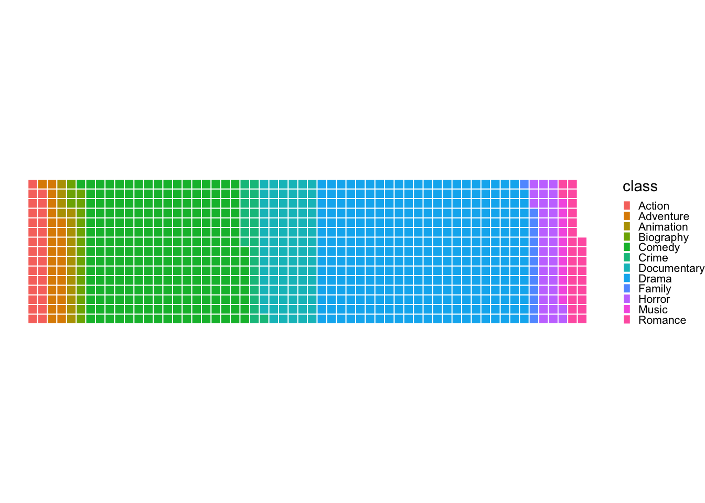
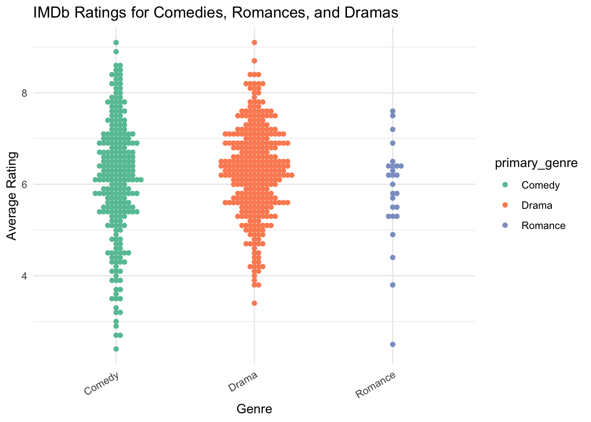
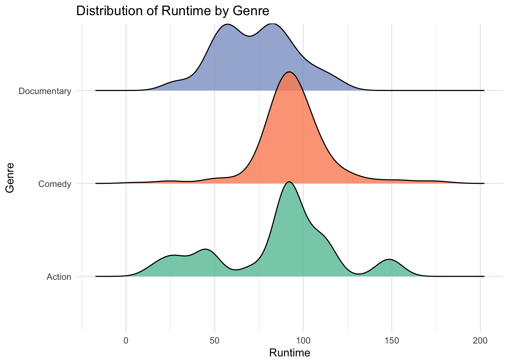
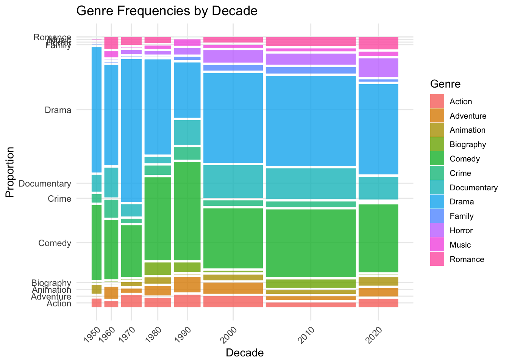

I am using the summer movies data set, which is a compilation of movies with “summer” in the title from IMDB. I started by loading the data and extracting only the first genre for each movie since some have multiple.
library(ggplot2)
library(dplyr)##
## Attaching package: 'dplyr'## The following objects are masked from 'package:stats':
##
## filter, lag## The following objects are masked from 'package:base':
##
## intersect, setdiff, setequal, unionlibrary(waffle)
library(ggbeeswarm)
library(ggridges)
library(ggmosaic)
tuesdata <- tidytuesdayR::tt_load('2024-07-30')## ---- Compiling #TidyTuesday
## Information for 2024-07-30
## ----## --- There are 2 files
## available ---
##
##
## ── Downloading files ─────────
##
## 1 of 2:
## "summer_movie_genres.csv"
## 2 of 2: "summer_movies.csv"summer_movie_genres <- tuesdata$summer_movie_genres
summer_movies <- tuesdata$summer_movies
# extracting only the first listed genre for each movie
primary_genre <- sub(",.*", "", summer_movies$genres)To get a rough idea of the frequencies of different genres in the dataset, I created a waffle plot. To keep it readable, I only included genres with more than five observations. This shows that comedies and dramas are the most frequent genres by far.
# creating a waffle plot to see the relative frequencies of different genres of movies with "summer" in the title (excluding those with five or fewer observations)
tabled_data <- as.data.frame(table(class=primary_genre)) %>%
filter(Freq > 5)
ggplot(data = tabled_data) +
aes(fill = class, values = Freq) +
geom_waffle(n_rows = 15, size = 0.33, colour = "white") +
coord_equal() +
theme_void() +
theme(
legend.position = "right",
legend.key.size = unit(0.2, "cm"),
legend.text = element_text(size = 8)
)
Next, I compared average ratings of comedies, romances, and dramas using a beeswarm plot. This is a good plot type to use as it also shows that there are fewer romances compared to comedies and dramas. Comedies seem to have a wider spread of ratings whereas dramas are more concentrated.
# creating a beeswarm plot to compare average ratings of comedies, romances, and dramas with "summer" in the title
summer_movies %>%
mutate(primary_genre = sub(",.*", "", genres)) %>% # extract only the first listed genre for each movie
filter(primary_genre %in% c("Comedy", "Romance", "Drama")) %>% # filter genre for comedy, drama, and romance
ggplot(aes(x = primary_genre, y = average_rating, color = primary_genre)) +
geom_beeswarm() +
theme_minimal() +
labs(title = "IMDb Ratings for Comedies, Romances, and Dramas",
x = "Genre",
y = "Average Rating") +
theme(axis.text.x = element_text(angle = 30, hjust = 1)) +
scale_color_brewer(palette = "Set2")
I also compared runtimes for several genres using a ridgeline plot. This plot shows that action movies have a much wider spread of runtimes whereas comedies are very concentrated.
# creating a ridgeline plot to compare runtimes for documentary, action, comedy movies
summer_movies %>%
mutate(primary_genre = sub(",.*", "", genres)) %>%
filter(primary_genre %in% c("Documentary", "Action", "Comedy")) %>%
ggplot(aes(x = runtime_minutes, y = primary_genre, fill = primary_genre)) +
geom_density_ridges(alpha = 0.8, scale = 1.2) +
theme_minimal() +
labs(title = "Distribution of Runtime by Genre",
x = "Runtime",
y = "Genre") +
scale_fill_brewer(palette = "Set2") +
theme(legend.position = "none")## Picking joint bandwidth of 7.37## Warning: Removed 20 rows containing
## non-finite outside the scale
## range
## (`stat_density_ridges()`).
Finally, I created a mosaic plot to compare the relative frequencies of different genres across decades from 1950 to 2020.
# using a mosaic plot to compare relative frequencies of different genres across decades from 1950-2020
summer_movies <- summer_movies %>%
mutate(
primary_genre = sub(",.*", "", genres),
decade = floor(year / 10) * 10
)
genre_counts <- summer_movies %>%
count(primary_genre) %>%
filter(n > 5)
summer_movies_shortened <- summer_movies %>%
filter(primary_genre %in% genre_counts$primary_genre) %>%
filter(decade > 1940)
ggplot(summer_movies_shortened) +
geom_mosaic(aes(x = product(decade), fill = primary_genre), na.rm = TRUE) +
theme_minimal() +
labs(
title = "Genre Frequencies by Decade",
x = "Decade",
y = "Proportion",
fill = "Genre"
) +
theme(
axis.text.x = element_text(angle = 45, hjust = 1),
legend.key.size = unit(0.5, "cm"),
legend.text = element_text(size = 8)
)## Warning: The `scale_name` argument of
## `continuous_scale()` is
## deprecated as of ggplot2
## 3.5.0.
## This warning is displayed
## once every 8 hours.
## Call
## `lifecycle::last_lifecycle_warnings()`
## to see where this warning was
## generated.## Warning: The `trans` argument of
## `continuous_scale()` is
## deprecated as of ggplot2
## 3.5.0.
## ℹ Please use the `transform`
## argument instead.
## This warning is displayed
## once every 8 hours.
## Call
## `lifecycle::last_lifecycle_warnings()`
## to see where this warning was
## generated.## Warning: `unite_()` was deprecated in
## tidyr 1.2.0.
## ℹ Please use `unite()`
## instead.
## ℹ The deprecated feature was
## likely used in the ggmosaic
## package.
## Please report the issue at
## <https://github.com/haleyjeppson/ggmosaic>.
## This warning is displayed
## once every 8 hours.
## Call
## `lifecycle::last_lifecycle_warnings()`
## to see where this warning was
## generated.